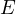
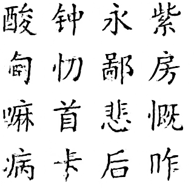
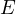
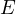

The number of Chinese characters is very large and their font styles are
also very rich. It is very expensive to create a set of fonts with different
styles for Chinese characters. In order to reduce the cost of Chinese
character style migration, this paper uses a convolutional neural network
to perform Chinese character style migration. Experiments show that the
convolutional neural network with the help of backpropagation algorithm
can perform the task of Chinese character style migration very well.
1 Introduction
There are about 2,000 to 3,000 Chinese characters that are often used, which is a lot
more in numbers compared to the letters in English. And, for historical and cultural
reasons, there are very many different writing styles for the same Chinese character.
Creating the appropriate font for the Chinese character style is a very costly affair,
not only in terms of money but also in terms of time. Due to their structural
characteristics, Chinese characters can be easily processed as images, and
convolutional neural networks are very advantageous in image processing. In this
paper, an algorithm for Chinese character style migration is implemented based on
convolutional neural networks. It can be used in conjunction with the back
propagation algorithm to effectively perform the task of Chinese character style
migration.
This paper first introduces the components of the backpropagation algorithm and
the convolutional neural network, then explains the specific structure of
the convolutional neural network that can perform Chinese character style
migration, and finally demonstrates the effectiveness of the method using
experiments.
The main three contributions of this paper are as follows.
An easy-to-train model for Chinese character font generation is proposed.
The larger the model is, the more likely it is to achieve better generation
results, but a larger model also means higher training costs. In this paper,
the proposed model has a small number of parameters and can be trained
with few computational resources.
In this paper, some general conclusions are obtained about neural
generation of Chinese characters through neural networks by trying to
compare the effect of different sizes of convolutional kernels and different
network depths. These conclusions are instructive for designing new
Chinese character font generation networks.
The validity of the model is verified in the dataset constructed from the
actual fonts.
2 Related work
The generation of new fonts for English or Latin alphabets has been studied in quite
a few literatures. [2] found that neural networks can achieve letter font recognition
and similar font generation using just 4 of the 26 English letters. [1] used conditional
GAN in performing font style migration on letters.
However, the research on Chinese character generation is still relatively small. A
possible GAN for generating calligraphic styles of specific Chinese characters is
proposed in [8] with very realistic detail variations, but the main focus is on the
generation of a small number of calligraphic characters and is not discussed in the
context of a large number of Chinese character generation. [5] proposed a
cross-language approach for font style migration between fonts that learn the same
language. [6] decoupled the content and style of Chinese characters using Variational
Autoencoder (VAE), which enabled the model to get one-shot generalization ability
and get good results with only a small amount of data for training, but mainly
considered to generate handwritten type fonts. [10] proposes a method to reduce the
pattern collapse of GANs generated from Chinese characters. [3] proposed a method
to generate handwritten style Chinese characters using CycleGAN. [7] proposed a
meta-learning method based on recurrent neural networks that can mimic user
handwritten fonts, but relying on the information of the stroke order when
writing. [9] uses an unsupervised approach for font generation based on
GAN.
Previous methods have made progress in Chinese character font generation, but each
has shortcomings in training difficulty, model size, and usage scenarios. The method
proposed in this paper has a simple training process, small resource consumption,
and can generate common Chinese characters well.
3 Back propagation algorithm
A neural network is essentially a function determined using the set of
parameters . The neural networks are trained to find a suitable value among all
possible values of so that the objective function reaches a
small value. Where is the input to the neural network, is the output
obtained by the neural network, is the ideal output corresponding to , and
denotes the difference between the output of network and the target
output.
In practical applications, it is very difficult to obtain the analytical solution of the
parameter mathematically because of the complexity of the network structure,
so numerical methods are often used to obtain an approximate estimate of the
optimal solution, which is often called the training of neural networks. With the
increase in computing power of computers, the back propagation algorithm has
become the mainstream method for network training. Back propagation is essentially
calculating the gradients, and is called back propagation since in this method the
gradients of the parameters close to the output are computed first, and the gradients
of the parameters leaning forward are computed on top of that. The following is an
example of the back propagation algorithm process used in a fully connected
network.
A fully connected layer is a traditional multilayer perceptron that uses a softmax
activation function in the output layer. ”Fully connected” means that every neuron in
the previous layer is connected to every neuron in the next layer. Let there are
layers in the fully connected network, is the original input of the network, is
the output of the layer of the network, is the result of after the
activation function, and is the parameter of the layer of the network.
The direction of updating can be obtained by calculating the partial
derivative of  with respect to . In the calculation, the chain rule is
used.
(1)
In this formula above, only is related to , the rest can be directly derived
from the formula, and again from the procedure of
(2)
has already been computed during the network forward computation, so the
final result can be obtained.
By back propagation, the partial derivative of the cost function with respect to
the parameter can be obtained. The value of the function increases along the
positive direction of the partial derivative, and the value of the cost function can
be reduced by simply following the negative direction of the partial derivative. The
exact method of updating the parameter values using partial derivatives will be given
in the next section.
When updating new parameters, the simplest strategy can be used:
(3)
where denotes the number of iterations of the training process and is the
partial derivative of with respect to at the th iteration. is the
weight to modify the parameter values according to the partial derivatives, also called
the learning rate.
But the parameters converge slowly when training the network using this method
and it may take a longer time to get a usable network.Adam algorithm is proposed to
speed up the training of the network. Adam algorithm uses the first and
second order moments of the variables to update the parameters under the
premise of computing the gradient. The main flow is shown in Algorithm
1.
Require:  Learning rate λ
Require:  ρ1 and ρ2 for exponential decay of moment estimation
Require:¬† Œ¥ for numerical stability ¬† Initialize s and r to 0 ¬† Initialize time step t to 0 ¬† while¬†No stopping guidelines met¬†do ¬† Compute gradient: g ¬† Update biased first-order moment estimation: s ‚Üê œÅ1s + (1 − œÅ1)g ¬† Update biased second-order moment estimation: r ‚Üê œÅ2r + (1 − œÅ2)g ‚äô g ¬† Correct bias in first-order moment: ≈ù ‚Üê ¬† Correct bias in second-order moment: r‚Üê ¬† Calculate update: Œîw ‚Üê‚àíùúñ ¬† Update parameters: w ‚Üê w + Œîw ¬† end¬†while
5 Other components of a convolutional network
5.1 Convolutional layer
Convolutional neural networks (ConvNets or CNNs) are a class of neural networks
that have proven to be very effective in areas such as image recognition and
classification. The convolution layer consists of a set of filters, which can be
considered as a two-dimensional digital matrix. The main purpose of convolution is
to extract features from the input image. The output image can be generated by
convolving the filter with the input image. The convolution operation is performed as
follows:
Overlaying a filter at a location on the image.
Multiplying the value in the filter with the value of the corresponding pixel
in the image.
The sum of the products above is obtained by adding the values of the
target pixels in the output image.
The sum of the products above is obtained by adding the values of the target pixels
in the output image.
Repeat this operation for all locations of the image. Usually, convolution
helps to find specific local image features (e.g., edges) to be used in the
network later. For a two-dimensional signal, the convolution layer is given
by
(4)
5.2 Fully connected layer
The output of the convolution and pooling layers represent high-level features of the
input image. The purpose of the fully-connected layer is to use these features to
classify the input image into various classes based on the training dataset. In addition
to classification, adding a fully-connected layer is also an inexpensive way to learn
non-linear combinations of image features.
Most features from the convolutional and pooling layers may be beneficial for
classification task, but a combination of these features may be better. The core
operation of the fully connected layer is formulated as
(5)
5.3 Batch normalization layer
the regularization is performed in terms of the mini-batch at the time of performing
the study. Specifically, the regularization is performed so that the mean of the data
distribution is 0 and the variance is 1. In mathematical terms, this is shown
below.
The essence of neural network learning is the distribution of the learning data. Once
the distribution of training data and test data are different, the generalization ability
of the network is greatly reduced. On the other hand, once the distribution of each
batch of training data is different (batch gradient descent), then the network must
learn to adapt to a different distribution in each iteration, which will greatly reduce
the training speed of the network. This is exactly the reason for doing normalized
preprocessing on the data.
The uses of batch normalization layer include:
Speed up the training and convergence of the network.
Less dependent on initial values.
Prevent overfitting.
5.4 Activation function
The distribution of data is overwhelmingly nonlinear, while the general computation
of neural networks is linear, the introduction of activation function is to introduce
nonlinearity in the neural network and strengthen the learning ability of the network.
The biggest feature of the activation function is nonlinearity.
ReLU (Rectified Linear Unit) is the corrected linear unit function. The form of the
function can be expressed as
(6)
The effective derivative of ReLU is constant 1, which solves the problem of gradient
disappearance that occurs in the deep network, and makes the deep network more
trainable. At the same time, ReLU is a nonlinear function, which means
that the first-order derivative is not constant. The derivative of ReLU is
different for positive and negative input values, respectively. Therefore, ReLU is
nonlinear.
6 Chinese character font conversion
6.1 Network Structure
Figure 1: Network structure of the Chinese character font conversion network
The overall structure of the network used in this paper is shown in Fig 1, where Base
extractor is mainly responsible for extracting sufficient features from the original
image; Structure A and Structure B utilize the structure of residual and Inception
fusion in Inception-ResNet v2, but unlike the original version, the number of channels
of convolution is appropriately adjusted to improve the computational efficiency.
Structure A and Structure B utilize the structure of residual and Inception fusion in
Inception-ResNet v2, but unlike the original version, the number of channels of
convolution is adjusted to improve the computational efficiency, making the
overall computational scale smaller and more conducive to the application of
Chinese character font generation, with m and n representing the number of
repetitions of the corresponding modules, respectively. The specific structures of
Stucture A, Structure B, and Reduce Block are shown in Fig 1a, Fig 1b, and
Fig 1c, while the structures of Base extractor and Output structure are
different in different experiments. Therefore, they are listed in the experimental
section.
(a) Structure A
(b) Structure B
(c) Reduce Block
Figure 2: Structures of networks
In this paper, the input of the network is the source font image with a resolution of
160 × 160, and the output is the target font image with a resolution of 80 × 80. The
resolution of the feature map is 160 × 160 in the Base extractor, which is the same as
the input image; the resolution drops to 80 × 80 from the Reduce Block, which is the
same as the output image.
The loss function used for network training is mean absolute error.
(a) Structure of B1
(b) Structure of B2
(c) Structure of B3
Figure 3: Base structures
(a) Structure of O1
(b) Structure of O2
Figure 4: Output blocks
7 Experiment
Table 1: Configurations of networks
Configuration
Base extractor
m
n
Output structure
dropout
Sigmod
1
B1
5
5
O1
0.9
Yes
2
B2
5
5
O1
0.9
-
3
B3
3
3
O2
0.9
-
4
B1
5
5
O1
-
-
5
B2
5
5
O1
-
-
6
B2
3
3
O1
-
-
7
B3
3
3
O2
-
-
8
B3
3
3
O2
-
-
9
B2
3
3
O2
-
-
(a) Result of network 1
(b) Result of network 2
(c) Result of network 3
(d) Result of network 4
(e) Result of network 5
(f) Result of network 6
(g) Result of network 7
(h) Result of network 8

(i) Result of network 9
Figure 5: Results of different networks
The different network structures used in the experiments are shown in Table 1, where
B1, B2, and B3 are different structures of different Base extractors, and their specific
compositions are shown in Fig. 2a, Fig. 2b, and Fig. 2c. O1 and O2 represent
different Output structures, and their specific compositions are shown in Fig. 3a and
Fig. 3b.
In the figure, 1x7 (1,2) p(0,3) means that the size of the convolution kernel of this
layer is 1 × 7, the number of input channels is 1, the number of output channels is 2,
and the size of the padding is (0 ,3). The size of the number after the letter s
represents the size of the stride. The parameters of other convolutional layers can be
explained accordingly.
Because larger convolution kernels will take up more computational resources, and
the excessive number of parameters will also make the network training difficult, two
corresponding one-dimensional convolutions are used for convolution kernels larger
than 3 × 3 in the experiments of this paper.
By pairing the experiments, the following points can be found.
using Dropout at the end of the kanji generation network will use the
presence of noise in the final generated result of the network. The dropout
layers are used in net1, net2, net3, and net4, and with a small probability
of 0 of 0.1, all the 4 networks show noise in the generated results, and
the strokes of the Chinese characters are missing to some extent. This is
probably due to the fact that the dropout layer is located at the end of
the network and the network has no chance to correct the defects in the
feature maps afterwards. It also shows that it is better not to use dropout
at the end of the Chinese character font generation network.
The larger convolutional energy in the first stage gives better results. In
net2, net5, net6, and net9, the largest convolution kernels are used, and
the results of these networks are significantly better than those of the
other networks. This illustrates that using larger convolutional kernels
in shallower layers can yield better results in Chinese character font
generation networks.
more intermediate layers can get better results. In net1, net2, net4, and
net5, a relatively large number of intermediate layers are used, and it is
observed that all three networks except net1 have better results than the
version with fewer derivatives.
The use of Sigmod at the end of the network impairs the performance of
the Chinese character generation network. Of the 9 networks trained in the
experiment, only net1 uses sigmod. even though more derivatives are used
in net1, it still performs worse than all other versions. In summary, when
using convolutional neural networks for Chinese character font generation,
not using dropout and sigmod at the end of the network and using
larger convolutional kernels with more convolutional layers can give better
results.
There are more examples in Fig.6 for the result. On the left is the standard
Chinese character image in the computer, and on the right is the corresponding
changed style of Chinese characters generated by the neural network. You
can see that the characters have not changed, but the style has changed
significantly
Figure 6: Network Output Illustration
8 Conclusion
In order to achieve efficient and low-cost Chinese character font generation, this
paper conducts a series of explorations. Using 9 sets of comparative experiments, we
propose several design principles for Chinese character generation networks: using
larger convolutional kernels, using deeper networks, and not using dropout and
sigmod at the end. It is also shown that using only convolutional neural networks
without other complex network structures can achieve good results in Chinese
character font generation.
References
[1]   Samaneh Azadi, Matthew Fisher, Vladimir Kim, Zhaowen Wang, Eli
Shechtman, and Trevor Darrell. Multi-content GAN for few-shot font style
transfer. In 2018 IEEE/CVF Conference on Computer Vision and Pattern
Recognition. IEEE, jun 2018.
[3]   Bo Chang, Qiong Zhang, Shenyi Pan, and Lili Meng. Generating
Handwritten Chinese Characters Using CycleGAN. Proceedings - 2018
IEEE Winter Conference on Applications of Computer Vision, WACV
2018, 2018-January:199–207, 2018.
[4]   Diederik P. Kingma and Jimmy Ba. Adam: A method for stochastic
optimization. December 2014.
[5]   Chenhao Li, Yuta Taniguchi, Min Lu, and Hajime Nagahara.
Cross-language font style transfer. (Chenhao Li):1–11, 2017.
[6]   Danyang Sun, Tongzheng Ren, Chongxuan Li, Hang Su, and Jun Zhu.
Learning to write stylized Chinese characters by reading a handful of
examples. IJCAI International Joint Conference on Artificial Intelligence,
2018-July:920–927, 2018.
[7]   Shusen Tang and Zhouhui Lian. Write Like You: Synthesizing Your
Cursive Online Chinese Handwriting via Metric-based Meta Learning.
Computer Graphics Forum, 40(2):141–151, 2021.
[8]   Yun Xiao, Wenlong
Lei, Lei Lu, Xiaojun Chang, Xia Zheng, and Xiaojiang Chen. CS-GAN:
Cross-Structure Generative Adversarial Networks for Chinese calligraphy
translation[Formula presented]. Knowledge-Based Systems, 229:107334,
2021.
[9]   Yangchen Xie, Xinyuan Chen, Li Sun, and Yue Lu. DG-Font:
Deformable Generative Networks for Unsupervised Font Generation.
Proceedings of the IEEE Computer Society Conference on Computer Vision
and Pattern Recognition, pages 5126–5136, 2021.
[10]   Jinshan Zeng, Qi Chen, Yunxin Liu, Mingwen Wang, and Yuan Yao.
StrokeGAN: Reducing Mode Collapse in Chinese Font Generation via
Stroke Encoding. 2020.
 so that the objective function reaches a
small value. Where
so that the objective function reaches a
small value. Where  is the input to the neural network,
is the input to the neural network,  is the output
obtained by the neural network, is the ideal output corresponding to
is the output
obtained by the neural network, is the ideal output corresponding to  , and
, and
 denotes the difference between the output of network and the target
output.
denotes the difference between the output of network and the target
output.
 mathematically because of the complexity of the network structure,
so numerical methods are often used to obtain an approximate estimate of the
optimal solution, which is often called the training of neural networks. With the
increase in computing power of computers, the back propagation algorithm has
become the mainstream method for network training. Back propagation is essentially
calculating the gradients, and is called back propagation since in this method the
gradients of the parameters close to the output are computed first, and the gradients
of the parameters leaning forward are computed on top of that. The following is an
example of the back propagation algorithm process used in a fully connected
network.
mathematically because of the complexity of the network structure,
so numerical methods are often used to obtain an approximate estimate of the
optimal solution, which is often called the training of neural networks. With the
increase in computing power of computers, the back propagation algorithm has
become the mainstream method for network training. Back propagation is essentially
calculating the gradients, and is called back propagation since in this method the
gradients of the parameters close to the output are computed first, and the gradients
of the parameters leaning forward are computed on top of that. The following is an
example of the back propagation algorithm process used in a fully connected
network.
 layers in the fully connected network,
layers in the fully connected network,  is the original input of the network,
is the original input of the network,  is
the output of the layer of the network, is the result of
is
the output of the layer of the network, is the result of  after the
activation function, and
after the
activation function, and  is the parameter of the
is the parameter of the  layer of the network.
The direction of updating can be obtained by calculating the partial
derivative of  with respect to
layer of the network.
The direction of updating can be obtained by calculating the partial
derivative of  with respect to  . In the calculation, the chain rule is
used.
. In the calculation, the chain rule is
used.
 , the rest can be directly derived
from the formula, and again from the procedure of
, the rest can be directly derived
from the formula, and again from the procedure of
 with respect to
the parameter
with respect to
the parameter  can be obtained. The value of the function increases along the
positive direction of the partial derivative, and the value of the cost function
can be obtained. The value of the function increases along the
positive direction of the partial derivative, and the value of the cost function  can
be reduced by simply following the negative direction of the partial derivative. The
exact method of updating the parameter values using partial derivatives will be given
in the next section.
can
be reduced by simply following the negative direction of the partial derivative. The
exact method of updating the parameter values using partial derivatives will be given
in the next section.
 denotes the number of iterations of the training process and is the
partial derivative of
denotes the number of iterations of the training process and is the
partial derivative of  with respect to at the
with respect to at the  th iteration. is the
weight to modify the parameter values according to the partial derivatives, also called
the learning rate.
th iteration. is the
weight to modify the parameter values according to the partial derivatives, also called
the learning rate.